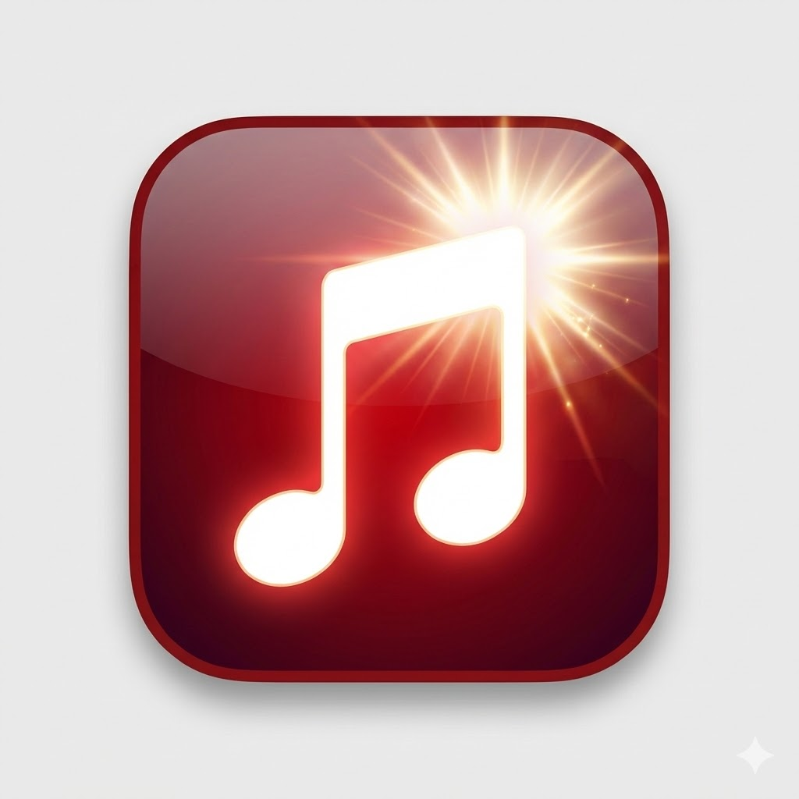

PRO 버전 무료설치

Melody Snap
🎵
음악소리로
🔍
검색으로
📥
링크복사
⭐
찜하기
음악소리로 찾기를 시작하세요
💡 사용법
버튼을 누른 뒤
재생 중인 음악
에 마이크를 가까이 하세요.
약
10초
간 듣고 자동으로 인식합니다.
인식이 끝나면 곡 정보와 YouTube 검색 결과가 표시됩니다.
처음 사용 시
마이크 권한
허용이 필요합니다.
인식된 곡
다운로드할 영상 선택
YouTube 검색으로 다운로드
검색
자동완성(최근·추천)
링크로 다운로드
가져오기
찜하기
이 포스팅은 쿠팡 파트너스 활동의 일환으로, 이에 따른 일정액의 수수료를 제공받습니다.